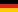

Diese Fanseite wird nicht mehr aktualisiert. Für Neuigkeiten besucht die offizielle Website der Sterne.
Falls du Links zu Fotos oder Konzertberichten hast oder selbst einen Konzertbericht hier veröffentlichen möchtest, schreibe mir bitte an molily@mailbox.org. Ebenso freue ich mich über Hinweise auf fehlende Konzerte, veraltete Links sowie andere Korrekturen und Ergänzungen.
Die Termine sind chronologisch absteigend sortiert – Konzerttermine, die am weitesten in der Zukunft liegen, stehen ganz oben, davor liegende stehen darunter. Kommende Termine sind rosa hinterlegt.
Letzte Aktualisierung: 29.05.2011
| Datum | Veranstaltungsort | Weitere Informationen und Konzertberichte |
|---|---|---|
| Konzert: Die Sterne, Musik, 27.08.2011 |  Leipzig – Conne Island | 20 JAHRE POP – part one. Mit Stereo Total, Chuckamuck + big afterdance. |
| Konzert: Die Sterne, Musik, 18.06.2011 | Zürich – Theaterhaus Gessnerallee, Stall 6 | Festspieleröffnung, mit DeVotchKa (USA) und My Heart Belongs to Cecilia Winter (CH) |
| Konzert: Die Sterne, Musik, 21.05.2011 | Wien – Pratersauna | |
| Konzert: Die Sterne, Musik, 08.04.2011 | Köln – Gloria | 10 Jahre Parallel Schallplatten Konzert mit Von Spar, Three Shades und Katie Smokers Wedding Party |
| Konzert: Die Sterne, Musik, 26.03.2011 | Hamburg – Rathausmarkt | Anti-Atom-Demo |
| Konzert: Die Sterne, Musik, 15.02.2011 | Hamburg – Fabrik | Benefiz für jugendliche unbegleitete Flüchtlinge. Mit Herrchens Frauchen, Rainer Trampert & Thomas Ebermann und Helge Schneider |
| Datum | Veranstaltungsort | Weitere Informationen und Konzertberichte |
|---|---|---|
| Konzert: Die Sterne, Musik, 17.11.2010 | Bielefeld – Forum | verlegt vom 3.11. auf den 17.11. |
| Konzert: Die Sterne, Musik, 04.11.2010 | Kiel – Pumpe | |
| Konzert: Die Sterne, Musik, 02.11.2010 | Offenbach – Hafen2 | |
| Konzert: Die Sterne, Musik, 01.11.2010 | München – 59:1 | |
| Konzert: Die Sterne, Musik, 31.10.2010 | Regensburg – Alte Mälzerei | |
| Konzert: Die Sterne, Musik, 30.10.2010 | Leipzig – Gewandhaus | Audio Invasion 2010 |
| Konzert: Die Sterne, Musik, 23.10.2010 | Lingen – Alter Schlachthof Festival | |
| Konzert: Die Sterne, Musik, 26.08.2010 | Herdringen – Zauberhafte Abende | Open Air am Jagdschloss Herdringen, mit Fettes Brot |
| Konzert: Die Sterne, Musik, 21.08.2010 | Hannover – BootBooHook | |
| Konzert: Die Sterne, Musik, 14.08.2010 | Hamburg – Dockville | |
| Konzert: Die Sterne, Musik, 07.08.2010 | Gmünd – Palaverama Festival | |
| Konzert: Die Sterne, Musik, 06.08.2010 | Freising – Prima Leben und Stereo | Open-Air-Festival am Vöttinger Weiher, Freising |
| Konzert: Die Sterne, Musik, 31.07.2010 | Dortmund – Juicy Beats | |
| Konzert: Die Sterne, Musik, 24.07.2010 | Diepholz – Apple Tree Garden Festival | |
| Konzert: Die Sterne, Musik, 17.07.2010 | Dingolfing (bei Dessau/Leipzig) – Melt Festival | |
| Konzert: Die Sterne, Musik, 27.06.2010 | Köln – c/o Pop | |
| Konzert: Die Sterne, Musik, 04.06.2010 | Nürnberg – Rock im Park | Clubstage, 23:35 - 00:30 Uhr |
| Konzert: Die Sterne, Musik, 06.06.2010 | Nürburgring, Eifel – Rock am Ring | Clubstage, 23:05 - 00:00 Uhr |
| Konzert: Die Sterne, Musik, 16.05.2010 | Wien – Ö1 Kulturwandertag | |
| Konzert: Die Sterne, Musik, 15.05.2010 | Dingolfing – Red Box Festival | |
| Konzert: Die Sterne, Musik, 14.05.2010 | Innsbruck – Weekender | |
| Konzert: Die Sterne, Musik, 13.05.2010 | Dornbirn – Conrad Sohm | |
| Konzert: Die Sterne, Musik, 12.05.2010 | Würzburg – Posthalle | |
| Konzert: Die Sterne, Musik, 28.04.2010 | Hamburg – Uebel & Gefährlich | Fotos auf Facebook.com |
| Konzert: Die Sterne, Musik, 25.04.2010 | Dresden – Beatpol | |
| Konzert: Die Sterne, Musik, 24.04.2010 | Erlangen – E-Werk | |
| Konzert: Die Sterne, Musik, 23.04.2010 | Salzburg – Arge | |
| Konzert: Die Sterne, Musik, 22.04.2010 | Graz – PPC | |
| Konzert: Die Sterne, Musik, 21.04.2010 | Wien – WUK | |
| Konzert: Die Sterne, Musik, 19.04.2010 | Freiburg – Jazzhaus | |
| Konzert: Die Sterne, Musik, 18.04.2010 | Zürich – Exil | |
| Konzert: Die Sterne, Musik, 17.04.2010 | Zürich – Exil | |
| Konzert: Die Sterne, Musik, 16.04.2010 | Augsburg – Kantine | |
| Konzert: Die Sterne, Musik, 15.04.2010 | Stuttgart – Rocker 33 | |
| Konzert: Die Sterne, Musik, 14.04.2010 | Heidelberg – Karlstorbahnhof | |
| Konzert: Die Sterne, Musik, 12.04.2010 | Köln – Luxor | |
| Konzert: Die Sterne, Musik, 11.04.2010 | Düsseldorf – Zakk | |
| Konzert: Die Sterne, Musik, 10.04.2010 | Osnabrück – Rosenhof | |
| Konzert: Die Sterne, Musik, 09.04.2010 | Bremen – Stauerei | |
| Konzert: Die Sterne, Musik, 26.02.2010 | Hamburg – Indra | Materie Records Release Party |
| Konzert: Die Sterne, Musik, 26.02.2010 | Hamburg – Michelle Records | Schaufenster-Konzert |
| Konzert: Die Sterne, Musik, 01.02.2010 | Hamburg – Thalia Theater | |
| Konzert: Die Sterne, Musik, 28.01.2010 | Jena – Kassablanca |
Fest von Campusradio Jena Reportage |
| Konzert: Die Sterne, Musik, 23.01.2010 | Wien – Arena |
FM4 Geburtstagsfest Video auf FM4.orf.at |
| Datum | Veranstaltungsort | Weitere Informationen und Konzertberichte |
|---|---|---|
| Konzert: Die Sterne, Musik, 19.10.2009 | Berlin – Lido | mit Frittenbude |
| Konzert: Die Sterne, Musik, 18.10.2009 | Braunschweig – Hilde27 | mit Frittenbude |
| Konzert: Die Sterne, Musik, 17.10.2009 | Münster – Skaters Palace | 10 Jahre Campusradio |
| Konzert: Die Sterne, Musik, 16.10.2009 | Köln – King Georg | live und DJing |
| Konzert: Die Sterne, Musik, 15.10.2009 | Darmstadt – 603qm | mit Frittenbude |
| Konzert: Die Sterne, Musik, 14.10.2009 | München – 59:1 | mit Frittenbude |
| Konzert: Die Sterne, Musik, 13.10.2009 | Leipzig – Conne Island | mit Frittenbude |
| Konzert: Die Sterne, Musik, 11.07.2009 | Rüsselsheim – Phono Pop Festival | |
| Konzert: Die Sterne, Musik, 27.06.2009 | Wien – Donauinselfest | FM4 Bühne |
| Konzert: Die Sterne, Musik, 20.06.2009 | Bayreuth – Uni Campus | UNIOPENAIR Bayreuth |
| Konzert: Die Sterne, Musik, 19.06.2009 | Würzburg – Umsonst Und Draussen | Posthalle - Danach Und Drinnen |
| Konzert: Die Sterne, Musik, 14.06.2009 | Hannover – Schauspielhaus | Festival Theaterformen Hannover |
| Konzert: Die Sterne, Musik, 13.06.2009 | Kirchanschöring – Im Grünen Festival | |
| Konzert: Die Sterne, Musik, 29.05.2009 | Neustrelitz – Immergut Festival |
| Datum | Veranstaltungsort | Weitere Informationen und Konzertberichte |
|---|---|---|
| Konzert: Die Sterne, Musik, 10.10.2008 | Marburg – KFZ | |
| Konzert: Die Sterne, Musik, 09.10.2008 | Kaiserslautern – Kammgarn | |
| Konzert: Die Sterne, Musik, 09.08.2008 | Leipzig – Ilses Erika | Open Erika 4 |
| Konzert: Die Sterne, Musik, 28.02.2008 | Wolfsburg – phaeno |
| Datum | Veranstaltungsort | Weitere Informationen und Konzertberichte |
|---|---|---|
| Konzert: Die Sterne, Musik, 15.07.2007 | Augsburg – Komödie | ABC-Festival |
| Konzert: Die Sterne, Musik, 10.07.2007 | Hamburg – Gymnasium Klosterschule | Konzert mit fremden Gitarren |
| Konzert: Die Sterne, Musik, 07.07.2007 | Rostock – Campus Explosion | |
| Konzert: Die Sterne, Musik, 28.06.2007 | Hamburg – Polittbüro | Saisonende-Party |
| Konzert: Die Sterne, Musik, 02.03.2007 | Berlin – Volksbühne |
| Datum | Veranstaltungsort | Weitere Informationen und Konzertberichte |
|---|---|---|
| Konzert: Die Sterne, Musik, 17.12.2006 | Hamburg – Grünspan | Jägermeister Rock:Liga 2006/07, mit Hush Puppies und Louis XIV |
| Konzert: Die Sterne, Musik, 15.12.2006 | Hannover – Musikzentrum Hannover | Jägermeister Rock:Liga 2006/07, mit Hush Puppies und Louis XIV |
| Konzert: Die Sterne, Musik, 14.12.2006 | Köln – Alter Wartesaal | Jägermeister Rock:Liga 2006/07, mit Hush Puppies und Louis XIV |
| Konzert: Die Sterne, Musik, 13.12.2006 | Stuttgart – Röhre | Jägermeister Rock:Liga 2006/07, mit Hush Puppies und Louis XIV |
| Konzert: Die Sterne, Musik, 12.12.2006 | Frankfurt – Batschkapp | Jägermeister Rock:Liga 2006/07, mit Hush Puppies und Louis XIV |
| Konzert: Die Sterne, Musik, 23.09.2006 | Hamburg – Uebel & Gefährlich | Reeperbahnfestival |
| Konzert: Die Sterne, Musik, 24.08.2006 | Bonn – Haus der Geschichte (Rock im Museum) | mit Fehlfarben und Revolverheld. In der Nacht vom 03. auf den 04.09.2006, 00.30 bis 02.30 Uhr im Rockpalast im WDR-Fernsehen Fotos auf rockpalast.de |
| Konzert: Die Sterne, Musik, 19.08.2006 | Hamburg – Wutzrock Festival | Fotos auf fotocat.de |
| Konzert: Die Sterne, Musik, 05.08.2006 | Bad Winsheim – Weinturm Open Air | |
| Konzert: Die Sterne, Musik, 04.08.2006 | Freising – Prima leben und stereo am Vöttinger Weiher | |
| Konzert: Die Sterne, Musik, 21.07.2006 | Augsburg – PopCity-Festival | |
| Konzert: Die Sterne, Musik, 14.07.2006 | Gräfenhainichen (bei Dessau) – Melt-Festival | Fotos auf fotocat.de |
| Konzert: Die Sterne, Musik, 13.07.2006 | Heidelberg – Karlstorbahnhof | |
| Konzert: Die Sterne, Musik, 12.07.2006 | Freiburg – ZMF | Bericht und Fotos auf fudder.de |
| Konzert: Die Sterne, Musik, 03.06.2006 | Linz – Linzfest (FM4-Bühne) | |
| Konzert: Die Sterne, Musik, 27.05.2006 | Köllerbach (Saarland) – Rocco del Schlacko Festival | |
| Konzert: Die Sterne, Musik, 24.05.2006 | Flensburg – Max | |
| Konzert: Die Sterne, Musik, 14.05.2006 | Hannover – Musikzentrum | mit NMFarner |
| Konzert: Die Sterne, Musik, 13.05.2006 | Bremen – Kulturzentrum Lagerhaus | mit NMFarner |
| Konzert: Die Sterne, Musik, 12.05.2006 | Magdeburg – Dominion Club | mit NMFarner |
| Konzert: Die Sterne, Musik, 11.05.2006 | Berlin – Postbahnhof | mit Gustav Bericht auf gaesteliste.de Fotos auf BerlinOnline |
| Konzert: Die Sterne, Musik, 09.05.2006 | Leipzig – Conne Island | mit Gustav |
| Konzert: Die Sterne, Musik, 08.05.2006 | Dresden – Star Club | mit Gustav Bericht und Fotos bei Ragazzi |
| Konzert: Die Sterne, Musik, 07.05.2006 | Erlangen – E-Werk | mit Gustav Fotos auf e-werk.de |
| Konzert: Die Sterne, Musik, 06.05.2006 | Regensburg – Kulturspeicher | mit Boy Group |
| Konzert: Die Sterne, Musik, 04.05.2006 | Wien – Arena | mit Boy Group |
| Konzert: Die Sterne, Musik, 03.05.2006 | Graz – PPC (project pop culture) | mit Boy Group |
| Konzert: Die Sterne, Musik, 02.05.2006 | Innsbruck – Treibhaus | mit Boy Group Fotos von Stefan Lachinger |
| Konzert: Die Sterne, Musik, 01.05.2006 | München – Ampere | mit Boy Group Bericht auf lestighaniker.de |
| Konzert: Die Sterne, Musik, 30.04.2006 | Dornbirn – Conrad Sohm | mit Boy Group |
| Konzert: Die Sterne, Musik, 28.04.2006 | Konstanz – Kulturladen | mit Boy Group |
| Konzert: Die Sterne, Musik, 27.04.2006 | Zürich – Abart | mit Boy Group |
| Konzert: Die Sterne, Musik, 26.04.2006 | Schorndorf – Manufaktur | mit Boy Group |
| Konzert: Die Sterne, Musik, 24.04.2006 | Frankfurt am Main – Mousonturm | mit Gustav Bericht auf faz.net Bericht auf rollingstone.de |
| Konzert: Die Sterne, Musik, 23.04.2006 | Köln – Bürgerhaus Stollwerck | mit Gustav |
| Konzert: Die Sterne, Musik, 22.04.2006 | Düsseldorf – Zakk | mit Gustav Bericht auf rp-online.de |
| Konzert: Die Sterne, Musik, 21.04.2006 | Bielefeld – Forum | mit Gustav |
| Konzert: Die Sterne, Musik, 20.04.2006 | Lingen – Alter Schlachthof | mit Gustav |
| Konzert: Die Sterne, Musik, 19.04.2006 | Hamburg – Uebel & Gefährlich | mit Gustav Bericht des Hamburger Abendblattes Bilder auf zeit.de Bericht und Fotos auf eskalaparty.de |
| Konzert: Die Sterne, Musik, 02.04.2006 | Wien – Radiokulturhaus | FM4 Radiosession. Die Eintrittskarten werden ca. zwei Wochen vor der Veranstaltung auf FM4 verlost. |
| Konzert: Die Sterne, Musik, 16.02.2006 | Köln – Gebäude 9 | Intro Intim, mit NM Farner, finn Bericht auf intro.de |
| Konzert: Die Sterne, Musik, 15.02.2006 | Berlin – Magnet Club | Intro Intim, mit finn Bericht der Märkischen Allgemeine |
| Datum | Veranstaltungsort | Weitere Informationen und Konzertberichte |
|---|---|---|
| Konzert: Die Sterne, Musik, 04.12.2005 | Hamburg – Weltbühne | Bericht in der Welt Bericht und Fotos auf eskalaparty.de Bericht und Fotos auf popkiller.de |
| Konzert: Die Sterne, Musik, 02.10.2005 | München – Feierwerk | Rage against Abschiebung |
| Konzert: Die Sterne, Musik, 17.09.2005 | Zürich – Rote Fabrik | WILD WILD WOZ - Ein Benefiz zugunsten der Woz, u.a. mit zusammen mit Gustav |
| Konzert: Die Sterne, Musik, 27.08.2005 | Wiesbaden – Folklore im Garten | |
| Konzert: Die Sterne, Musik, 26.08.2005 | Pouch bei Bitterfeld – Outside Festival | |
| Konzert: Die Sterne, Musik, 20.08.2005 | Hamburg – KdW | Release-Party zur Wiederveröffentlichung von »In Echt« |
| Konzert: Die Sterne, Musik, 19.08.2005 | Fresenhagen – Rio Reiser Familienfest 2005 | Fotos auf niebuell-online.de |
| Konzert: Die Sterne, Musik, 06.08.2005 | Gelsenkirchen – Amphitheater | |
| Konzert: Die Sterne, Musik, 16.07.2005 | Mannheim – Mannheim Music Award, Daimler-Chrysler Werksgelände | |
| Konzert: Die Sterne, Musik, 02.07.2005 | Leer (Ostfriesland) – Rock am Deich | |
| Konzert: Die Sterne, Musik, 27.06.2005 | Salzburg – ARGEkultur Gelände | |
| Konzert: Die Sterne, Musik, 25.06.2005 | Wien – Donauinselfest | |
| Konzert: Die Sterne, Musik, 24.06.2005 | Hoyerswerda – Populario Festival | |
| Konzert: Die Sterne, Musik, 04.06.2005 | Berlin – Berlinfestival | |
| Konzert: Die Sterne, Musik, 12.05.2005 | Osnabrück – Maiwoche | Goldrushbühne Herrenteichswall |
| Konzert: Die Sterne, Musik, 11.05.2005 | Wuppertal – U-Club | Fotos auf u-club.de |
| Konzert: Die Sterne, Musik, 15.04.2005 | Marburg – Universität Marburg | AStA-Erstsemester-Party im Hörsaalgebäude, Biegenstraße |
| Konzert: Die Sterne, Musik, 26.02.2005 | Lingen – Alter Schlachthof | Festival mit Klee und Bernd Begemann |
| Konzert: Die Sterne, Musik, 29.01.2005 | Bremen – Junges Theater | verlegt vom 27.10.2004 |
| Konzert: Die Sterne, Musik, 28.01.2005 | Kiel – Pumpe | verlegt vom 28.10.2004 |
| Konzert: Die Sterne, Musik, 27.01.2005 | Rostock – MAU | verlegt vom 29.10.2004 Fotos auf ktv-zone.de |
| Konzert: Die Sterne, Musik, 26.01.2005 | Hannover – Faust | verlegt vom 24.10.2004 |
| Konzert: Die Sterne, Musik, 25.01.2005 | Gießen – MuK | |
| Konzert: Die Sterne, Musik, 23.01.2005 | Jena – Kassablanca | verlegt vom 21.10.2004 Bericht des JUSTmag |
| Konzert: Die Sterne, Musik, 22.01.2005 | Leipzig – Conne Island | Fotos auf fotocat.de Bericht auf popfrontal.de |
| Konzert: Die Sterne, Musik, 21.01.2005 | Berlin – SO36 | |
| Konzert: Die Sterne, Musik, 20.01.2005 | Dresden – Star Club | verlegt vom 22.10.2004 |
| Konzert: Die Sterne, Musik, 19.01.2005 | Erlangen – E-Werk | verlegt vom 20.10.2004 |
| Konzert: Die Sterne, Musik, 18.01.2005 | Regensburg – Alte Mälzerei | verlegt vom 19.10.2004 |
| Konzert: Die Sterne, Musik, 17.01.2005 | Düsseldorf – Zakk | verlegt vom 26.10.2004 Bericht auf gaesteliste.de |
| Datum | Veranstaltungsort | Weitere Informationen und Konzertberichte |
|---|---|---|
| Konzert: Die Sterne, Musik, 17.10.2004 | Graz – PPC (project pop culture) | |
| Konzert: Die Sterne, Musik, 16.10.2004 | Ebensee – Kino | |
| Konzert: Die Sterne, Musik, 15.10.2004 | Wien – Flex | |
| Konzert: Die Sterne, Musik, 14.10.2004 | München – Feierwerk | |
| Konzert: Die Sterne, Musik, 13.10.2004 | Zürich – Abart | Fotos auf abart.ch |
| Konzert: Die Sterne, Musik, 12.10.2004 | Luzern – Boa | |
| Konzert: Die Sterne, Musik, 11.10.2004 | Düdingen – Bad Bonn | |
| Konzert: Die Sterne, Musik, 09.10.2004 | Schorndorf – Manufaktur | |
| Konzert: Die Sterne, Musik, 08.10.2004 | Frankfurt am Main – Café Royal | Bericht der Frankfurter Rundschau |
| Konzert: Die Sterne, Musik, 07.10.2004 | Krefeld – Kulturfabrik | Fotos auf triggerfish.de Berich der Westdeutschen Zeitung |
| Konzert: Die Sterne, Musik, 06.10.2004 | Bielefeld – Forum | |
| Konzert: Die Sterne, Musik, 01.10.2004 | Hamburg – Markthalle | Berich auf popfrontal.de |
| Konzert: Die Sterne, Musik, 14.08.2004 | bei Salzburg – Frequency Festival | |
| Konzert: Die Sterne, Musik, 31.07.2004 | Magdeburg – Belichtungszeit 1200, Elbwiesen | |
| Konzert: Die Sterne, Musik, 23.07.2004 | Hannover – Justizvollzugsanstalt | |
| Konzert: Die Sterne, Musik, 17.07.2004 | Kassel – Kulturzelt | |
| Konzert: Die Sterne, Musik, 16.07.2004 | Geretsried/München – Sonnenrot Festival | |
| Konzert: Die Sterne, Musik, 15.07.2004 | Feldkirch – Poolbar Festival | Fotos auf poolbar.at |
| Konzert: Die Sterne, Musik, 31.05.2004 | Hamburg – Knust | Bericht auf popfrontal.de Bericht der Welt |
| Konzert: Die Sterne, Musik, 30.05.2004 | Mainz – OpenOhr Festival | |
| Konzert: Die Sterne, Musik, 29.05.2004 | Passau – Passauer Pfingst-Open-Air | |
| Konzert: Die Sterne, Musik, 28.05.2004 | Wien – Porgy & Bess | |
| Konzert: Die Sterne, Musik, 27.05.2004 | München – Atomic Cafe | |
| Konzert: Die Sterne, Musik, 26.05.2004 | Frankfurt – Mousonturm | |
| Konzert: Die Sterne, Musik, 25.05.2004 | Köln – Prime Club | |
| Konzert: Die Sterne, Musik, 24.05.2004 | Berlin – COLUMBIAFritz | Bericht des Tagesspiegels Fotos auf fotocat.de |
| Konzert: Die Sterne, Musik, 22.05.2004 | Innsbruck – Treibhaus | FM4 Tour |
| Konzert: Die Sterne, Musik, 21.05.2004 | Salzburg – Szene | FM4 Tour |
| Konzert: Die Sterne, Musik, 20.05.2004 | Oslip (Burgenland) – Cselley-Mühle | FM4 Tour |
| Konzert: Die Sterne, Musik, 07.05.2004 | Leipzig – Moritzbastei | Fotos der Leipziger Volkszeitung Fotos auf fotocat.de |
| Konzert: Die Sterne, Musik, 06.05.2004 | Schwerin – Komplex | Benefizkonzert für Opfer von Nazi-Gewalt Bericht auf see-you.de |
| Konzert: Die Sterne, Musik, 01.05.2004 | Recklinghausen – Ruhrfestspiele | Bericht und Interview auf Gaesteliste.de |
| Konzert: Die Sterne, Musik, 01.03.2004 | Köln – Live Music Hall | Monsters Of Rocco — Liebeskreis für Rocco Clein Benefizkonzert für die Kinder Julius und Jackie des am 1. März verstorbenen Rocco Clein. (Nachruf in der Süddeutschen Zeitung, siehe auch SPEX.) Bericht auf Gaesteliste.de Bericht auf triggerfish.de |
| Datum | Veranstaltungsort | Weitere Informationen und Konzerberichte |
|---|---|---|
| Konzert: Die Sterne, Musik, 07.11.2003 | Kopenhagen – Club Stengade 30 | |
| Konzert: Die Sterne, Musik, 29.11.2003 | München – Bavarian Open | |
| Konzert: Die Sterne, Musik, 26.10.2003 | Potsdam – Waschhaus | Fotos auf fotocat.de Bericht der Märkischen Allgemeinen |
| Konzert: Die Sterne, Musik, 25.10.2003 | Düsseldorf – Stone im Ratinger Hof | Bericht auf Gaesteliste.de |
| Konzert: Die Sterne, Musik, 23.10.2003 | Weinheim – Cafe Central | Bericht des C6 Magazin |
| Konzert: Die Sterne, Musik, 23.10.2003 | Graz – PPC (project pop culture) | Fotos auf spark7.com |
| Konzert: Die Sterne, Musik, 22.10.2003 | Wien – WUK | |
| Konzert: Die Sterne, Musik, 21.10.2003 | Augsburg – Kantine | |
| Konzert: Die Sterne, Musik, 20.10.2003 | Freiburg – Jazzhaus | |
| Konzert: Die Sterne, Musik, 19.10.2003 | Jena – Kassablanca | |
| Konzert: Die Sterne, Musik, 18.10.2003 | Bochum – Matrix | YUBELLADO L’AGE D’OR Jubiläumstour |
| Konzert: Die Sterne, Musik, 17.10.2003 | Franfurt am Main – Mousonturm | YUBELLADO L’AGE D’OR Jubiläumstour |
| Konzert: Die Sterne, Musik, 16.10.2003 | Lingen (Ems) – Alter Schlachthof | YUBELLADO L’AGE D’OR Jubiläumstour |
| Konzert: Die Sterne, Musik, 04.10.2003 | Hamburg – Phonodrome | YUBELLADO L’AGE D’OR Jubiläumstour Fotos der Herbsttour |
| Konzert: Die Sterne, Musik, 14.08.2003 | Köln – Kantine | Popkomm, L’AGE D’OR Jubiläum Informationen auf kantine.com Bericht des Kölner Stadtanzeigers |
| Konzert: Die Sterne, Musik, 05.07.2003 | Hamburg – Loveboat/Bootstour mit der »Concordia« | Bericht der Hamburger Morgenpost |
| Konzert: Die Sterne, Musik, 04.07.2003 | Waltrop – Waltroper Parkfest | |
| Konzert: Die Sterne, Musik, 03.07.2003 | Augsburg – Frischluft 2003 Open Air | |
| Konzert: Die Sterne, Musik, 02.07.2003 | Mainz – Kulturlounge schick&schön | |
| Konzert: Die Sterne, Musik, 13.06.2003 | Hofstetten-Grünau – Nuke Festival | Fotos auf nuke.at Interview mit den Sternen auf joynt.at Fotos von katanoy auf joynt.at |
| Konzert: Die Sterne, Musik, 18.05.2003 | Regensburg – Alte Mälzerei | |
| Konzert: Die Sterne, Musik, 17.05.2003 | Bayreuth – Uni Open Air | |
| Konzert: Die Sterne, Musik, 16.05.2003 | Magdeburg – Projekt 7 | Fotos auf fotocat.de Bericht von Martin (xitek) |
| Konzert: Die Sterne, Musik, 04.05.2003 | Hamburg – Westwerk | (Zwei Konzerte.) Fotos und Infos auf www.liveimwestwerk.de Fotos auf diesterne.de |
| Konzert: Die Sterne, Musik, 03.05.2003 | Hamburg – Westwerk | Fotos und Infos auf www.liveimwestwerk.de Fotos auf diesterne.de Bericht der tageszeitung (taz) |
| Konzert: Die Sterne, Musik, 01.05.2003 | Hannover – Musiktheater Bad | Fotos auf musiktheater-bad.de |
| Datum | Veranstaltungsort | Weitere Informationen und Konzertberichte |
|---|---|---|
| Konzert: Die Sterne, Musik, 13.10.2002 | Hildesheim – Vier Linden | |
| Konzert: Die Sterne, Musik, 12.10.2002 | Potsdam – Waschhaus | Fotos auf fotocat.de |
| Konzert: Die Sterne, Musik, 11.10.2002 | Magdeburg – Factory | Bericht von Martin (xitek) |
| Konzert: Die Sterne, Musik, 10.10.2002 | Leipzig – Conne Island | |
| Konzert: Die Sterne, Musik, 09.10.2002 | Kassel – Hotel Reiss | |
| Konzert: Die Sterne, Musik, 08.10.2002 | Nürnberg – k4 | Bericht von Frank Nikol |
| Konzert: Die Sterne, Musik, 06.10.2002 | Wien – wuk | Bericht von annaanalog |
| Konzert: Die Sterne, Musik, 05.10.2002 | Linz – Posthof | |
| Konzert: Die Sterne, Musik, 04.10.2002 | Innsbruck – Treibhaus | |
| Konzert: Die Sterne, Musik, 03.10.2002 | Bern – Isc | |
| Konzert: Die Sterne, Musik, 02.10.2002 | Winterthur – Salzhaus | |
| Konzert: Die Sterne, Musik, 01.10.2002 | Basel – Sommercasino | |
| Konzert: Die Sterne, Musik, 29.09.2002 | Freiburg – Jazzhaus | |
| Konzert: Die Sterne, Musik, 28.09.2002 | Mannheim – Alte Feuerwache | Bericht von Morgenweb (kostenpflichtige Anmeldung nötig) |
| Konzert: Die Sterne, Musik, 27.09.2002 | Darmstadt – Centralstation | |
| Konzert: Die Sterne, Musik, 26.09.2002 | Düsseldorf – Zakk | Fotos von Christof Wolff auf triggerfish.de Bericht und Fotos auf triggerfish.de |
| Konzert: Die Sterne, Musik, 25.09.2002 | Dortmund – Soundgarden | |
| Konzert: Die Sterne, Musik, 24.09.2002 | Bielefeld – Forum | |
| 23.09.2002 | Münster – Ballhaus | ins Ballhaus verlegt |
| Konzert: Die Sterne, Musik, 22.09.2002 | Bremen – Schlachthof | |
| Konzert: Die Sterne, Musik, 21.09.2002 | Lübeck – Treibsand | Fotos auf treibsand-luebeck.de |
| Konzert: Die Sterne, Musik, 20.09.2002 | Rostock – Mau Club | |
| Konzert: Die Sterne, Musik, 25.08.2002 | Hamburg – Herzblut St. Pauli | Fotos auf herbert.nachtlager.de Fotos des Herzblut-Konzerts auf diesterne.de Bericht auf der FC St. Pauli Netzseite Bericht der Hamburger Morgenpost Bericht der tageszeitung (taz) Bericht des b-side Magazins Bericht der Welt (kostenlose Anmeldung nötig) |
| Konzert: Die Sterne, Musik, 18.08.2002 | Erfurt/Hohenfelden – Highfield Festival | Interview mit den Sternen im Anschluss des Festivals |
| Konzert: Die Sterne, Musik, 17.08.2002 | Weeze – Bizarre Festival | Visions Aftershow Party. Hinweise zum TV-Konzertmitschnitt findet man unter Neuigkeiten. Chat-Transkript |
| Konzert: Die Sterne, Musik, 14.08.2002 | Eberschwang – Bulldogfest | |
| Konzert: Die Sterne, Musik, 11.08.2002 | Feldkirch – Poolbar Festival | Bericht mit Fotos auf poolbar.at Bericht auf vol.at |
| Konzert: Die Sterne, Musik, 10.08.2002 | Bad Tölz – Hillside Festival | |
| Konzert: Die Sterne, Musik, 29.06.2002 | Bonn – Rheinkultur | |
| Konzert: Die Sterne, Musik, 22.06.2002 | Wiesbaden – Schlachthof Festival | |
| Konzert: Die Sterne, Musik, 21.06.2002 | Solothurn – Festival | |
| Konzert: Die Sterne, Musik, 15.06.2002 | bei Salzburg – Frequency Festival | |
| Konzert: Die Sterne, Musik, 07.06.2002 | Dessau – Melt Festival | Infos zu den Sternen auf melt-openair.de Fotos auf radiozone.de Fotos auf fotocat.de |
| Konzert: Die Sterne, Musik, 31.05.2002 | Neustrelitz – Immergut Festival | |
| Konzert: Die Sterne, Musik, 19.04.2002 | Hamburg – Markthalle | 25 Jahre Markthalle Festival Bericht auf Gaesteliste.de |
| Konzert: Die Sterne, Musik, 24.03.2002 | Hamburg – Markthalle | Bericht mit Fotos auf Gaesteliste.de |
| Konzert: Die Sterne, Musik, 23.03.2002 | Hannover – Faust | |
| Konzert: Die Sterne, Musik, 22.03.2002 | Essen – KKC | Konzertkritik auf zeichensprache.de |
| Konzert: Die Sterne, Musik, 21.03.2002 | Köln – Prime Club | Bericht auf pds-aachen.de |
| Konzert: Die Sterne, Musik, 20.03.2002 | Frankfurt – Gallus Theater | |
| Konzert: Die Sterne, Musik, 19.03.2002 | Schorndorf – Manufaktur | |
| Konzert: Die Sterne, Musik, 18.03.2002 | Zürich – Dynamo | |
| Konzert: Die Sterne, Musik, 17.03.2002 | München – Feierwerk | Bericht von plattenfreun.de Bericht mit Fotos auf Gaesteliste.de Die Sterne am Tresen (Foto, plattenfreun.de) |
| Konzert: Die Sterne, Musik, 16.03.2002 | Wien – Wuk | Videointerview und Mitschnitte vom Wiener Konzert auf derstandard.at |
| Konzert: Die Sterne, Musik, 15.03.2002 | Dresden – Star Club | Bericht auf mainstage.de |
| Konzert: Die Sterne, Musik, 14.03.2002 | Berlin – Columbia Fritz | Bericht der tageszeitung (taz) Leserbericht auf visions.de (kostenlose Anmeldung nötig) |
| Konzert: Die Sterne, Musik, 11.01.2002 | München – Atomic Cafe | |
| Konzert: Die Sterne, Musik, 01.01.2002 | Berlin – Volksbühne | Bericht des Berliner Studentenmagazins humbug |